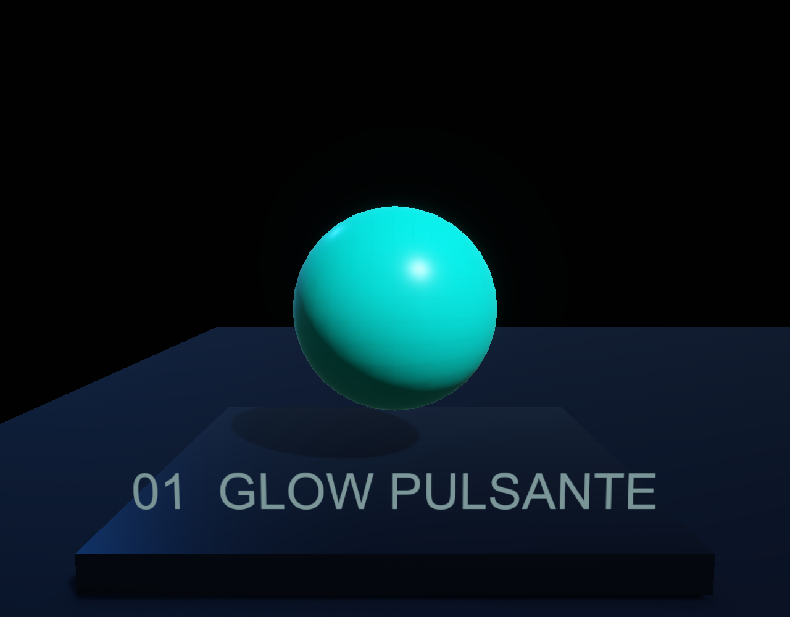
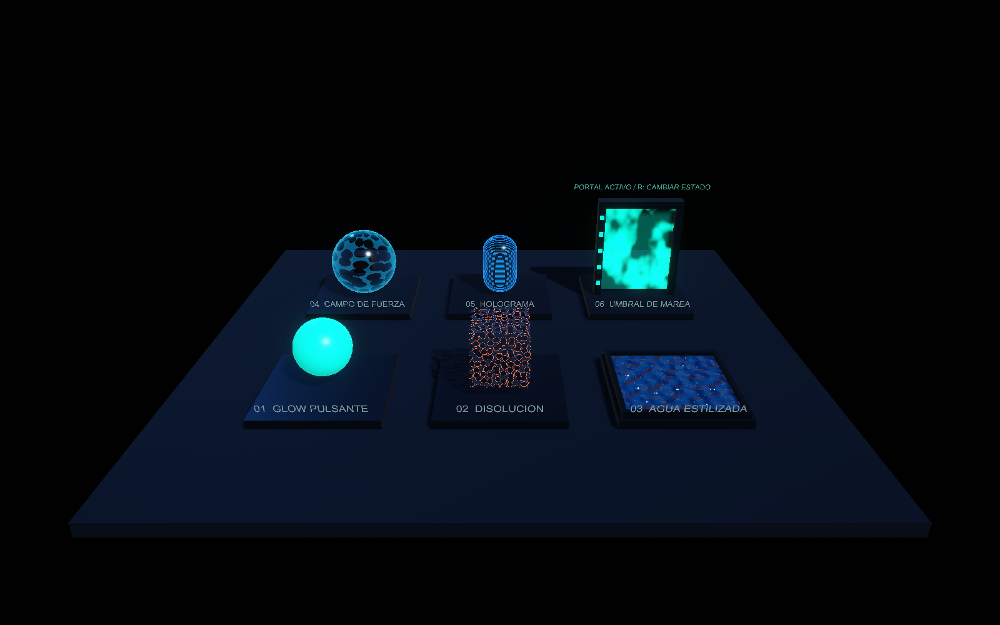
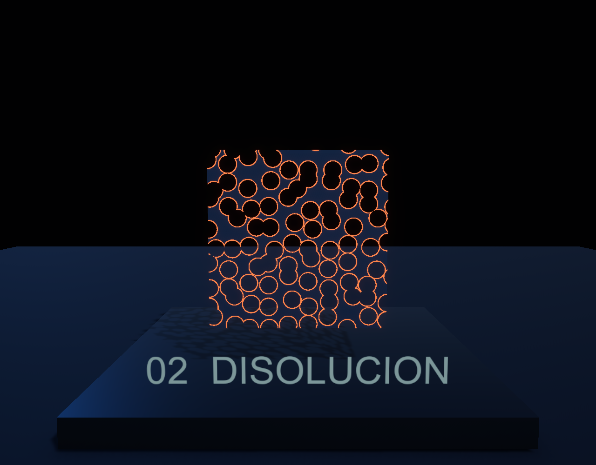
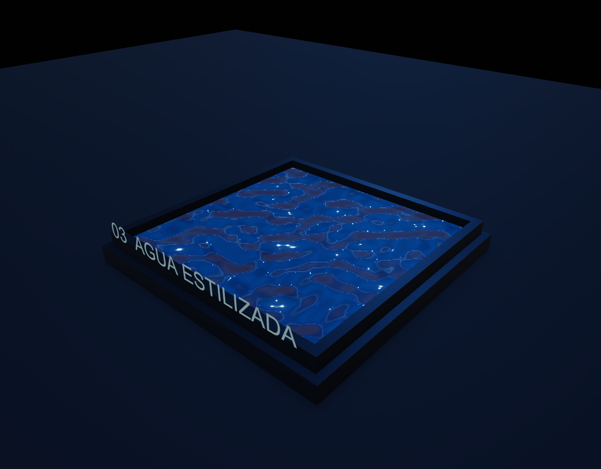
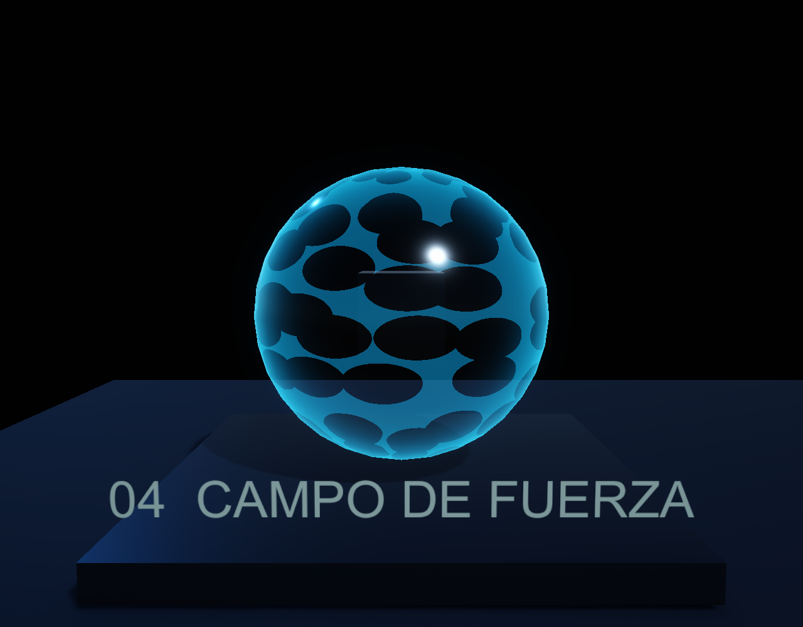
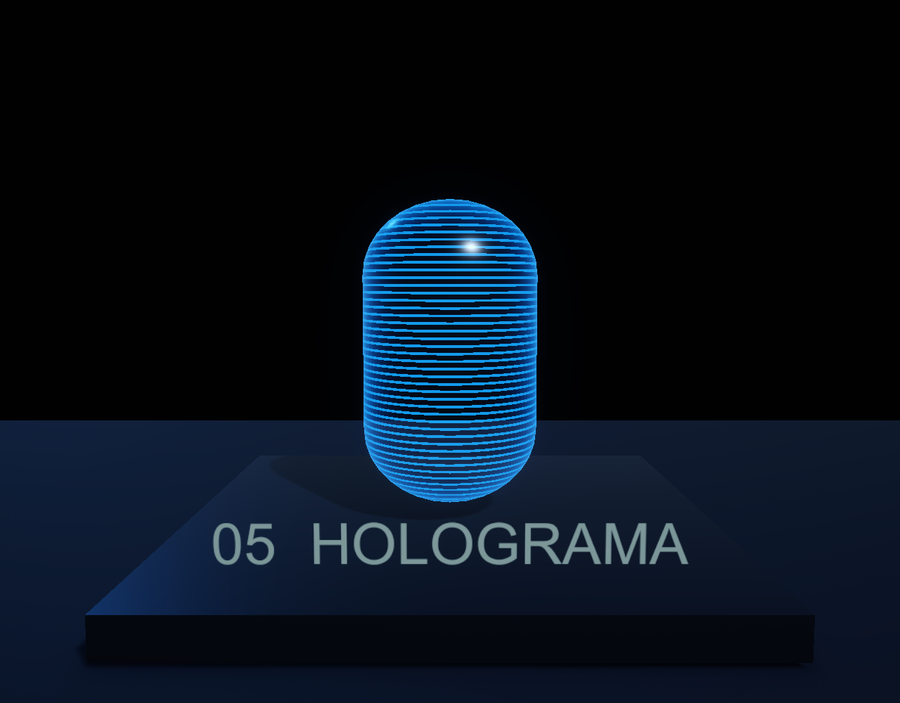
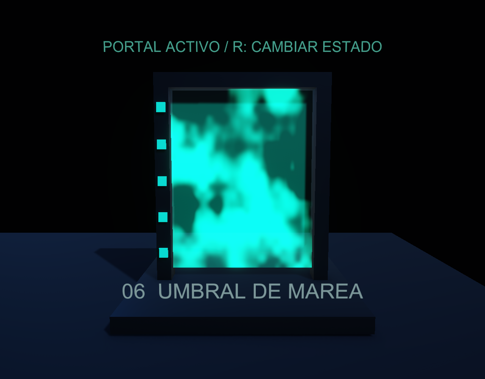
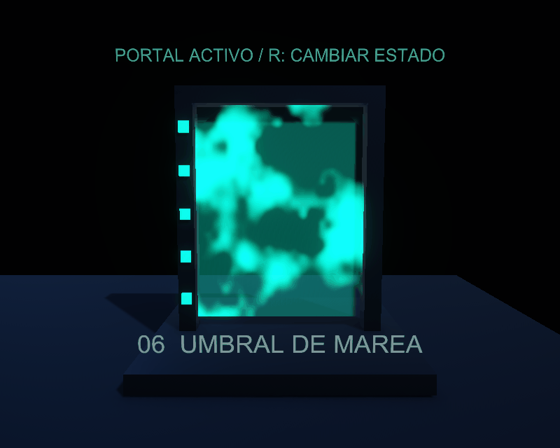

01 · Pulse Glow
Time, Sine y Remap animan la emisión HDR. Bloom realza la energía.
Ver grafoSeis shaders procedurales en URP: tres ejercicios del Nivel 1, dos arquetipos del Nivel 2 y un material original integrado en un portal funcional.
Assets/_MyShaders/Scenes/ShaderShowcase.unity y pulsa Play. 1–6 primeros planos, Tab galería, WASD movimiento, Q/E altura, clic derecho para mirar, R estado del portal y H panel.

Time, Sine y Remap animan la emisión HDR. Bloom realza la energía.
Ver grafo
Voronoi y Step recortan el material; dos umbrales aíslan el borde incandescente.
Ver grafo
UV animadas y normales procedurales producen ondas sin desplazar vértices.
Ver grafo
Fresnel y celdas Voronoi animadas definen el escudo alrededor de un núcleo.
Ver grafo
Scanlines verticalmente animadas, Fresnel y cortes breves de señal.
Ver grafo
Dos UV opuestas, ruido, Smoothstep, Fresnel y pulsación. Readiness conecta la apariencia con la disponibilidad del teletransporte.
Ver grafo
Un cristal imposible con corrientes líquidas de luz. GIF generado con fotogramas de Unity, preparado para adjuntarlo al foro.
Guardar GIF